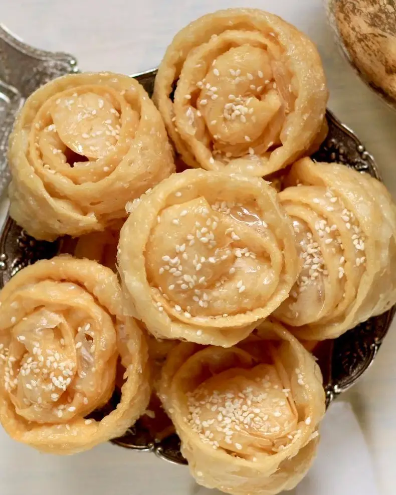

الثقافة والمطبخ الليبي
الثقافة الليبية تجربة حيّة تظهر في الفلكلور، اللباس، الضيافة، الحرف، الأسواق، وتكتمل على المائدة الليبية.
المطبخ الليبي
يتميز الأكل الليبي باستخدام البهارات ذات المذاق الحريف، وتتنوع أصنافه بين النشويات والخضار واللحوم والأسماك، متأثرًا بمطبخ البحر المتوسط والطعام الصحراوي.
- البازين
- الكسكسي
- الرشتة
- المبطن
- العصبان
- الحرايمي
- الشربة الليبية
- الفتات
- البوريك
- القلاية

الحلويات
تتنوع الحلويات الليبية بين المقروض، الغريبة، كعك البلاد، القرينات، العبمبر، الروزاطة، البقلاوة، الدبلة، والحجيبات.

المطاعم المعاصرة
تتيح المطاعم والمقاهي في المدن الرئيسية تذوق الأكلات الليبية والعصرية، إلى جانب الأطباق التركية والشامية والإيطالية والمطابخ العالمية.

الصناعات التقليدية
تمتاز الصناعات التقليدية الليبية بتنوعها وحسها الفني العالي، وتشمل النحاسيات والحديديات والفضيات والذهب والفخار والصوفيات والجلود والسعفيات والحرير والخشب والآلات الموسيقية.

الفلكلور
يعكس الفلكلور الليبي تنوع البيئات والذاكرة المحلية من الموسيقى والرقصات الشعبية إلى الفروسية والاحتفالات الاجتماعية.

الفلكلور والمهرجانات
تعكس المهرجانات والفعاليات الثقافية في ليبيا فرح المجتمع وتفاعله مع الطبيعة والمواسم، مثل مهرجانات الخريف في هون وغات، ملاقاة الربيع في سوكنة، مهرجان أوجلة، مهرجان جرمة، ومهرجان تساوة.

الأسواق
الأسواق القديمة مساحة نابضة للحرف والعطور والأقمشة والأكلات الشعبية ولقاءات الضيافة اليومية.
الضيافة
تظهر الضيافة الليبية في الشاي، التمور، المجالس، ودفء اللقاء، وهي جزء أساسي من تجربة الزائر.